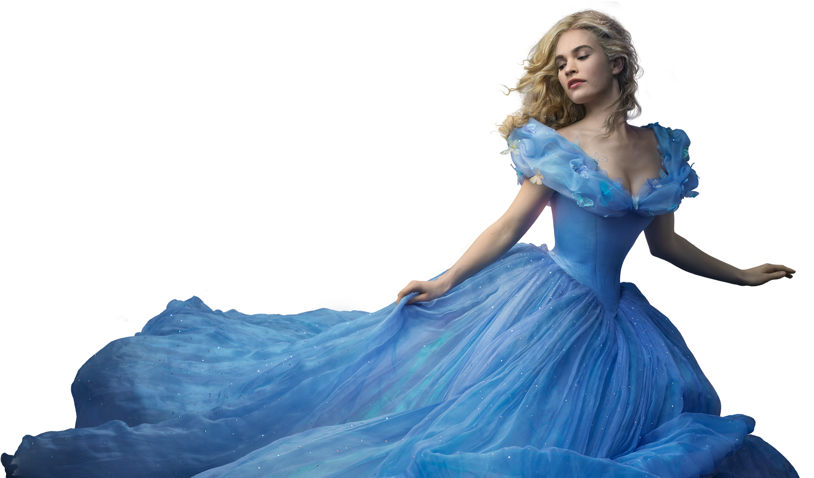

Pada jaman dahulu kala hiduplah seorang gadis cantik yang baik hati. Gadis itu bernama Cinderella. Kebaikan hatinya membuat semua orang menyayanginya bahkan hewan-hewan menyayanginya juga, terutama dua sahabatnya Gus dan Jaq. Mereka mau melakukan apa saja untuk Cinderella sahabatnya.
Cinderella hidup bersama ibu tiri dan dua saudara tirinya yang bernama Anastasia dan Drizella. Berbeda dengan Cinderella yang baik dan rajin, Anastasia dan Drizella sangat malas dan iri hati. Mereka menyuruh Cinderella mengerjakan semua perkerjaan sepeti membersihkan rumah, menjahit, memasak dan berkebun. Walaupun perlakuan kedua saudaranya sangat buruk namun Cinderella mencoba melakukan yang terbaik dan berusaha membuat ibu tiri dan kedua saudara tirinya bahagia.
Nyonya Tremaine ibu Tiri Cinderelaa merupakan orang yang dingin, kejam dan sangat iri dengan pesona dan kecantikan Cinderella. Dia senang membuat cinderella sibuk dengan semua pekerjaan, bahkan Cinderella yang kelelahan tidak membuatnya kasihan. Dia malah memberikan tugas tambahan yaitu meminta Cinderella memandikan kucingnya yang nakal, Lucifer.
Pada suatu hari, seorang utusan dari istama tiba dengan undangan khusus. Akan ada sebuah pesta besar di istana. Raja ingin anaknya segera mencari calon istri. Setiap gadis muda di kerajaan diundang, termasuk Cinderella. Cinderella sangat bersemangat dengan undangan pesta itu. Di loteng, ia menemukan gaun yang dulu milik ibunya. Gaun itu memang agak kuno, namun dengan kepintarannya Cinderella membuat gaun itu menjadi indah!
Nyonya Tremaine tidak ingin Cinderella anak tirinya pergi ke Pesta yang akan diselenggarakan di istana itu. Dia ingin Pangeran bertemu Anastasia dan Drizella. Dia sangat berharap Pangeran akan menikahi salah satu dari kedua anaknya! Nyonya Tremaine terus memberikan Cinderella pekerjaan yang sangat banyak. Dia akan membuat Cinderella sibuk sepanjang malam. Ini akan membuat Cinderella tidak memiliki kesempatan untuk datang ke pesta besar di Istana kerajaan. Sementara Cinderella terus bekerja menyelesaikan tugas dari ibu tirinya, para tikus dan para burung membantu membuat gaun cinderella menjadi indah. Mereka menambahkan pita dan manik-manik yang telah dibuang oleh kedua saudara tiri Cinderella. Para hewan itu berkerja bersama-sama untuk membuat gaun kuno yang sederhana menjadi gaun yang indah dan luar biasa.
Cinderella sangat gembira saat melihat gaun ibunya itu. Gaun itu sangat indah dan pantas sekali di tubuhnya. Sekarang dia bisa pergi ke pesta dengan percaya diri. "Oh, terima kasih banyak!" ucap Cinderella pada para sahabatnya Gus, Jaq, dan para burung. Ketika saduara tiri Cinderella melihat pita dan manik-manik lama mereka pada gaun Cinderella, mereka menjadi marah. Mereka iri dengan gaun Cinderella yang indah dan berkilauan. Walaupun manik-manik dan pita itu telah mereka buang, mereka memintanya kembali. Bahkan Mereka merobek baju Cinderella untuk melepaskan manik-manik dan pita itu. Nyonya Tremaine tidak menghentikan kedua putrinya. Dia pun iri karena cinderella terlihat sangat cantik dan menawan menggunakan gaun lama itu. Sambil tertawa kedua saudara tirinya pergi meninggalkan Cinderella. Mimpi Cinderella pergi ke pesta sirna. Tidak cukup waktu baginya untuk bisa pergi ke istana.
Cinderella lari ke kebun dan menangis. Pada saat itu tiba-tiba, datang ibu peri. Dengan tongkat ajaibnya dia merubah labu menjadi kereta kuda yang indah. Cinderella sekarang bisa pergi ke pesta, namun masih ada satu masalah. Gaun Cinderella telah rusak dan tidak bisa dipakai. "Bibbidi-Bobbidi-boo!" ucap ibu peri sambil melambaikan tongkatnya kembali. Ajaib Cinderella sekarang mengenakan gaun yang indah dan sandal kaca berkilau. Namun Ibu peri mengingatkan. Pada saat jam berdentang pukul 12.00 malam tepat, mantra sihir akan sirna.
Di pesta , Sang pangeran tampan tidak bisa melepaskan pandangan matanya dari Cinderella yang terlihat luar biasa cantik dan menawan. Tidak menyianyiakan kesempatan dia segera mengajak Cinderella berdansa. Orkestra dimainkan, dan Pangeran mulai menari dengan gadis cantik yang namanya dia masih tidak tahu. Dan bagi Cinderella, malam itu mimpinya menjadi kenyataan. Waktu berlalu, jam mulai mendekati waktu tengah malam. "Selamat tinggal!" ucap Cinderella dan kemudian bergegas pergi. "Tunggu!" panggil Pangeran. "Saya bahkan tidak tahu nama Anda!" Cinderella berlari terburu-buru. Dia khawatir matra ibu perni sirna ketika dia masih berada di pesta. Ketika berlari salah satu sepatu kacanya tertinggal.
Baik Cinderella maupun Pangeran Tampan tidak dapat melupakan kejadian pada malam itu. Mereka sama-sama saling merindukan. Pangeran mengirim utusan untuk menemukan gadis yang cocok dengan sepatu kaca. Utusan itu datang ke setiap rumah untuk meminta semua gadis mencoba sepatu kaca itu. Kedua kakak tiri Cinderella mencoba sepatu kaca itu. Kaki mereka berdua terlalu besar tapi terus memaksakannya masuk. Lady Tremaine mengunci Cinderella di loteng, tapi teman-teman tikus Cinderella membebaskannya. Pada saat Cinderella mencoba sepatu kaca yang dibawa utusan istana, Nyonya Tremaine tersandung sehingga sepatu kaca hancur tapi Cinderella yang memiliki lainnya di sakunya. Dan itu cocok. Cinderella dan Pangeran segera menikah. Semua orang bersuka-cita, termasuk teman-teman tikus Cinderella Gus dan Jaq, yang mengenakan pakaian khusus untuk pernikahan. Penuh dengan sukacita, Pangeran Tampan dan Cinderella yang hidup bahagia selamanya.
"Pesan Moral dari dongeng Cinderella adalah kita harus tetap bersabar dalam menghadapi segala kesulitan yang kita hadapi, dan kita harus tetap berharap dan berdoa pada yang kuasa. Karena semua akan indah pada waktunya."